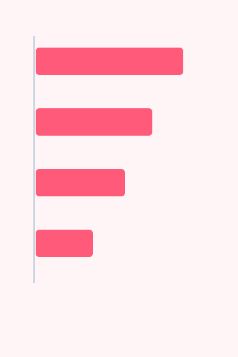

Requests
1.42M
Across all regions in the last twenty-four hours, including the retries that the gateway absorbed on the client's behalf.
updated 2 min ago
Signal
Everything on this page is one grid holding five regions, and one grid inside it holding a row of cards that nobody counted in advance.
1.42M
Across all regions in the last twenty-four hours, including the retries that the gateway absorbed on the client's behalf.
updated 2 min ago
86ms
Median, end to end.
updated 2 min ago
0.31%
Fives only. Fours are counted separately because most of them are somebody else's bug and not ours.
updated 2 min ago
61%
Peak worker pool.
updated 5 min ago
99.98%
Rolling thirty days.
updated 1 h ago
$4,180
Month to date, before committed-use discounts are applied.
updated 1 h ago
| Region | Requests | Errors |
|---|---|---|
| eu-west | 612k | 0.28% |
| eu-central | 404k | 0.35% |
| us-east | 288k | 0.30% |
| ap-south | 116k | 0.41% |

